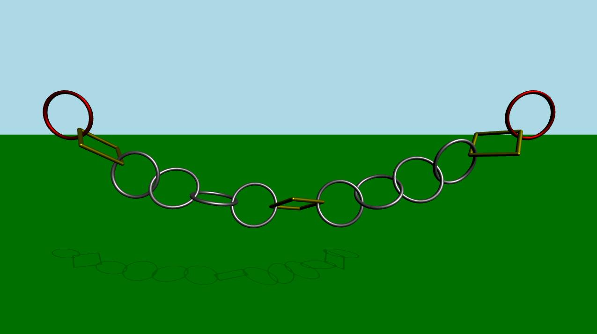
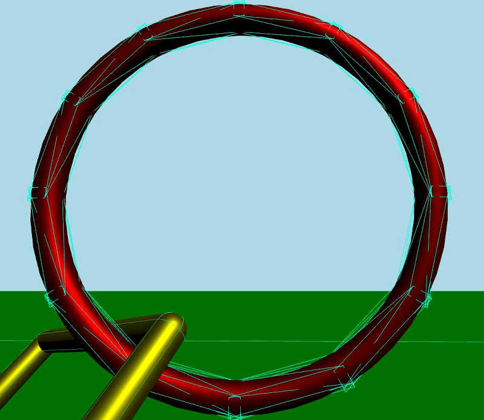
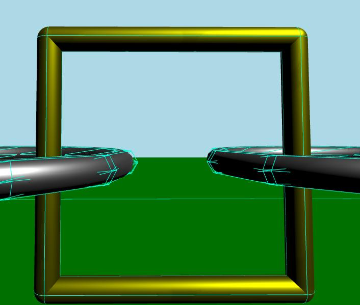

Qt Quick 3D Physics - Compound Shapes Example
Demonstrates using complex collision shapes.

This example demonstrates how to use more than one collision shape to create complex objects for collision detection. The scene consists of a green static plane and a series of links connected to each other. At the beginning, the simulation is disabled. After some time or when the user press the space key, the simulation will start. An animation will start that causes the leftmost and rightmost links to move horizontally back and forth.
Setup
As usual we need to add our PhysicsWorld:
PhysicsWorld { id: physicsWorld enableCCD: true maximumTimestep: 20 scene: viewport.scene }
We do the usual setup where we have an environment, camera and lights:
environment: SceneEnvironment { antialiasingMode: SceneEnvironment.MSAA backgroundMode: SceneEnvironment.Color clearColor: "lightblue" } focus: true PerspectiveCamera { id: camera position: Qt.vector3d(0, 900, 1500) eulerRotation: Qt.vector3d(-10, 0, 0) clipFar: 15500 clipNear: 1 } DirectionalLight { eulerRotation.x: -45 eulerRotation.y: 45 castsShadow: true brightness: 1.5 shadowFactor: 15 shadowFilter: 10 shadowMapFar: 100 shadowBias: -0.01 shadowMapQuality: Light.ShadowMapQualityVeryHigh }
Physical objects
We have our regular static plane:
StaticRigidBody { position: Qt.vector3d(0, -100, 0) eulerRotation: Qt.vector3d(-90, 0, 0) collisionShapes: PlaneShape {} Model { source: "#Rectangle" scale: Qt.vector3d(500, 500, 1) materials: DefaultMaterial { diffuseColor: "green" } castsShadows: false receivesShadows: true } }
Then we make instances of our links.
MeshLink { id: leftLink isKinematic: true property vector3d startPos: Qt.vector3d(-6 * viewport.ringDistance, viewport.ringY, 0) property vector3d startRot: Qt.vector3d(90, 0, 0) kinematicPosition: startPos position: startPos kinematicEulerRotation: startRot eulerRotation: startRot color: "red" } CapsuleLink { position: Qt.vector3d(-5 * viewport.ringDistance, viewport.ringY, 0) eulerRotation: Qt.vector3d(90, 0, 0) } MeshLink { position: Qt.vector3d(-4 * viewport.ringDistance, viewport.ringY, 0) eulerRotation: Qt.vector3d(90, 0, 0) } MeshLink { position: Qt.vector3d(-3 * viewport.ringDistance, viewport.ringY, 0) eulerRotation: Qt.vector3d(0, 90, 0) } MeshLink { position: Qt.vector3d(-2 * viewport.ringDistance, viewport.ringY, 0) eulerRotation: Qt.vector3d(90, 0, 0) } MeshLink { position: Qt.vector3d(-1 * viewport.ringDistance, viewport.ringY, 0) eulerRotation: Qt.vector3d(0, 90, 0) } CapsuleLink { position: Qt.vector3d(0, viewport.ringY, 0) } MeshLink { position: Qt.vector3d(1 * viewport.ringDistance, viewport.ringY, 0) eulerRotation: Qt.vector3d(0, 90, 0) } MeshLink { position: Qt.vector3d(2 * viewport.ringDistance, viewport.ringY, 0) eulerRotation: Qt.vector3d(90, 0, 0) } MeshLink { position: Qt.vector3d(3 * viewport.ringDistance, viewport.ringY, 0) eulerRotation: Qt.vector3d(0, 90, 0) } MeshLink { position: Qt.vector3d(4 * viewport.ringDistance, viewport.ringY, 0) eulerRotation: Qt.vector3d(90, 0, 0) } CapsuleLink { position: Qt.vector3d(5 * viewport.ringDistance, viewport.ringY, 0) eulerRotation: Qt.vector3d(90, 0, 0) } MeshLink { id: rightLink isKinematic: true property vector3d startPos: Qt.vector3d(6 * viewport.ringDistance, viewport.ringY, 0) property vector3d startRot: Qt.vector3d(90, 0, 0) kinematicPosition: startPos position: startPos kinematicEulerRotation: startRot eulerRotation: startRot color: "red" }
The first link which is on the left has its isKinematic property set to true so that we can control it via animation. Since it is a kinematic object we need to set the kinematicPosition and kinematicRotation properties. We animate it by animating the kinematicPosition property. The other links are instanced with some spacing between them.
To get a smooth animation that follows the physical simulation exactly we use an AnimationController which we connect to the onFrameDone signal on the PhysicsWorld. This way, if there were to be any frame drops slowing down the simulation the animation will slow down accordingly. We use a SequentialAnimation with four NumberAnimation to move the leftmost and rightmost rings back and forth. This is the QML code for the animation:
Connections { target: physicsWorld property real totalAnimationTime: 12000 function onFrameDone(timeStep) { let progressStep = timeStep / totalAnimationTime animationController.progress += progressStep if (animationController.progress >= 1) { animationController.completeToEnd() animationController.reload() animationController.progress = 0 } } } AnimationController { id: animationController animation: SequentialAnimation { NumberAnimation { target: leftLink property: "kinematicPosition.x" to: 3 * viewport.ringDistance from: -6 * viewport.ringDistance easing.type: Easing.InOutCubic duration: 1000 } NumberAnimation { target: leftLink property: "kinematicPosition.x" from: 3 * viewport.ringDistance to: -6 * viewport.ringDistance easing.type: Easing.InOutCubic duration: 1000 } NumberAnimation { target: rightLink property: "kinematicPosition.x" to: -3 * viewport.ringDistance from: 6 * viewport.ringDistance easing.type: Easing.InOutCubic duration: 1000 } NumberAnimation { target: rightLink property: "kinematicPosition.x" from: -3 * viewport.ringDistance to: 6 * viewport.ringDistance easing.type: Easing.InOutCubic duration: 1000 } } }
The interesting part is what is happening inside the Mesh and Capsule Links files. Let's take a look at each one of them.
Mesh Link
DynamicRigidBody { scale: Qt.vector3d(100, 100, 100) property color color: "white" PrincipledMaterial { id: _material baseColor: color metalness: 1.0 roughness: 0.5 } Model { source: "meshes/ring.mesh" materials: [_material] } collisionShapes: [ ConvexMeshShape { source: "meshes/segmentedRing_001.mesh" }, ConvexMeshShape { source: "meshes/segmentedRing_002.mesh" }, ConvexMeshShape { source: "meshes/segmentedRing_003.mesh" }, ConvexMeshShape { source: "meshes/segmentedRing_004.mesh" }, ConvexMeshShape { source: "meshes/segmentedRing_005.mesh" }, ConvexMeshShape { source: "meshes/segmentedRing_006.mesh" }, ConvexMeshShape { source: "meshes/segmentedRing_007.mesh" }, ConvexMeshShape { source: "meshes/segmentedRing_008.mesh" }, ConvexMeshShape { source: "meshes/segmentedRing_009.mesh" }, ConvexMeshShape { source: "meshes/segmentedRing_010.mesh" }, ConvexMeshShape { source: "meshes/segmentedRing_011.mesh" }, ConvexMeshShape { source: "meshes/segmentedRing_012.mesh" } ] }
The Mesh Link is a Dynamic Rigid Body with a model and a material. The model loads the mesh from a mesh file. We also have a list of collision shapes that together are combined and form a compound shape for collision detection. Each shape is a Convex Mesh shape which loads the mesh from a source file. A convex shape is basically a shape where the line between any two points within the shape is always inside the shape.
If we take a closer look when the debug mode is enabled, this is how the collision shapes form the compound collision shape:

Capsule Link
DynamicRigidBody { property real len: 170 property real w: 17 PrincipledMaterial { id: material3 baseColor: "yellow" metalness: 1.0 roughness: 0.5 } Node { opacity: 1 Model { materials: material3 source: "#Cylinder" scale: Qt.vector3d(w / 100, len / 100, w / 100) eulerRotation.z: 90 y: -len / 2 } Model { materials: material3 source: "#Cylinder" scale: Qt.vector3d(w / 100, len / 100, w / 100) eulerRotation.z: 90 y: len / 2 } Model { materials: material3 source: "#Cylinder" scale: Qt.vector3d(w / 100, len / 100, w / 100) x: len / 2 } Model { materials: material3 source: "#Cylinder" scale: Qt.vector3d(w / 100, len / 100, w / 100) x: -len / 2 } Model { materials: material3 source: "#Sphere" scale: Qt.vector3d(w / 100, w / 100, w / 100) x: -len / 2 y: -len / 2 } Model { materials: material3 source: "#Sphere" scale: Qt.vector3d(w / 100, w / 100, w / 100) x: -len / 2 y: len / 2 } Model { materials: material3 source: "#Sphere" scale: Qt.vector3d(w / 100, w / 100, w / 100) x: len / 2 y: -len / 2 } Model { materials: material3 source: "#Sphere" scale: Qt.vector3d(w / 100, w / 100, w / 100) x: len / 2 y: len / 2 } } collisionShapes: [ CapsuleShape { y: -len / 2 height: len diameter: w }, CapsuleShape { y: len / 2 height: len diameter: w }, CapsuleShape { x: -len / 2 eulerRotation.z: 90 height: len diameter: w }, CapsuleShape { x: len / 2 eulerRotation.z: 90 height: len diameter: w } ] }
The Capsule Link is a Dynamic Rigid Body with some models that share the same material. This link is formed from several cylinders and spheres. Like the Mesh Link we have a list of collision shapes. This time each shape is a Capsule Shape.
If we take a closer look when the debug mode is enabled, this is how the collision shapes form the compound collision shape.

Files: